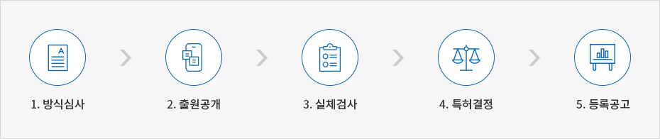
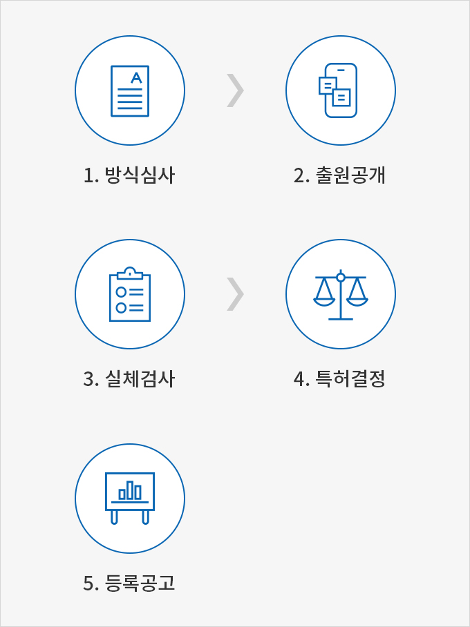

지식재산제도
- Home
- 경영·생활
- 지식재산권
- 지식재산제도
지식재산권은 산업재산권, 저작권, 신지식재산권으로 구분되며, 산업재산권은 특허권, 실용신안권, 디자인권, 상표권을 의미한다. 이 책에서는 일반기업에 적용되는 산업재산권만을 다루기로 한다.
산업재산권
산업재산권의 등록은 특허 등에 관한 권리의 발생, 변경, 소멸, 기타 특허권에 대한 일정한 사항을 특허청에 비치한 특허(등록)원부에 기재하는 것을 말한다. 등록원부란 특허청장이 법령에서 정하는 소정의 등록사항을 기재하기 위하여 특허청에 비치하는 공적장부를 말한다.
등록 시 존속기간
| 특허권 | 실용신안권 | 디자인권 | 상표권 |
|---|---|---|---|
| 설정 등록일로부터, 출원일 후 20년까지 |
설정 등록일로부터, 출원일 후 10년까지 |
설정 등록일로부터, 출원일 후 20년까지 |
설정 등록일로부터 10년 |
| * 10년마다 갱신 가능, 반영구적 권리 |
등록신청 절차


- 접수번호 부여, 등록납부
- 등록신청서(신청인·특허청)
-
방식심사
-
흠결 무
- 수리
- 등록(등록원부 생성 및 등재)
-
흠결 유(치유가능)
- 보정안내서
- 보정서 접수(보정서 반려)
- 수리
- 등록(등록원부 생성 및 등재)
-
흠결 유(치유불가능)
- 반려이유서 안내
- 소명서(반려)
- 수리
- 등록(등록원부 생성 및 등재)
-
흠결 무
특허권
특허권 제도는 발명을 보호 · 장려함으로써 국가산업의 발전을 도모하기 위한 제도이며, 이를 위하여 기술공개의 대가로 특허권을 부여하는 것을 말한다. 권리를 획득한 국가 내에만 효력이 발생하며, 대한민국은 특허출원에 있어 최초 출원자에게 특허권을 부여하는 선출원주의를 채택하고 있다.
특허출원 주요절차


- 방식심사
- 출원공개
- 실체검사
- 특허결정
- 등록공고

- 서식의 필수사항 기재, 기간의 준수, 증명서 첨부, 수수료 납부 등 절차상의 흠결을 점검하는 심사이다.
- 출원공개제도는 출원 후 1년 6개월이 경과하면 그 기술내용을 특허청이 공고의 형태로 일반인에게 공개하는 제도이며 심사가 지연될 경우 출원 기술의 공개가 늦어지는 것을 방지하기 위함이다.
- 산업상 이용가능성, 신규성 및 진보성 등의 특허요건을 판단하는 심사로써 정보공개의 대가로 특허를 부여하게 되므로 일반인이 쉽게 이해할 수 있도록 기재하고 있는가를 동시에 심사한다.
- 해당 출원이 특허요건을 충족하는 경우, 심사관이 특허를 부여하는 처분을 의미한다.
- 특허결정이 되면 출원인은 등록료를 납부하여 특허권을 설정등록한다.이때부터 권리가 발생하며 설정등록된 특허출원 내용을 등록공고로 발행하여 일반인에게 공표한다.
특허 출원 방법
| 구분 | 전자출원 | 서면출원 | |
|---|---|---|---|
| 온라인 | 우편 | 방문 | |
| 내용 | 전자문서 작성용 소프트웨어를 이용하여 온라인으로 전송 | 양식에 따라 작성한 후 특허청에 우편 제출 | 직접 방문 제출 |
| 접수처 | www.patent.go.kr ▶ 출원신청 ▶ 국내출원 ▶ 문서작성 소프트웨어 설치 | (35208) 대전광역시 서구 청사로 189 정부대전청사 특허청장 | 특허청 특허고객 서비스센터(대전), 특허청 서울사무소(서울) |
| 접수시간 | 월-토는 24시간 가능하며그 이외 공휴일 및 일요일에는 09:00- 21:00까지 출원이 가능 | 우체국 소인일자를 출원일로 인정 (PCT 국제출원은 특허청 도달일을 출원일로 인정) |
09:00-18:00 (동절기, 토요일 09:00-13:00) |